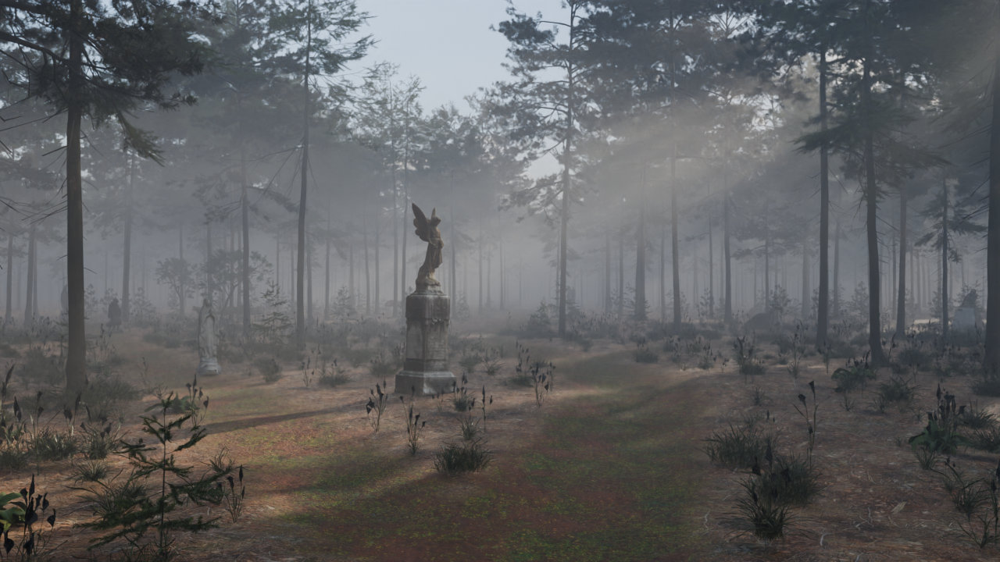
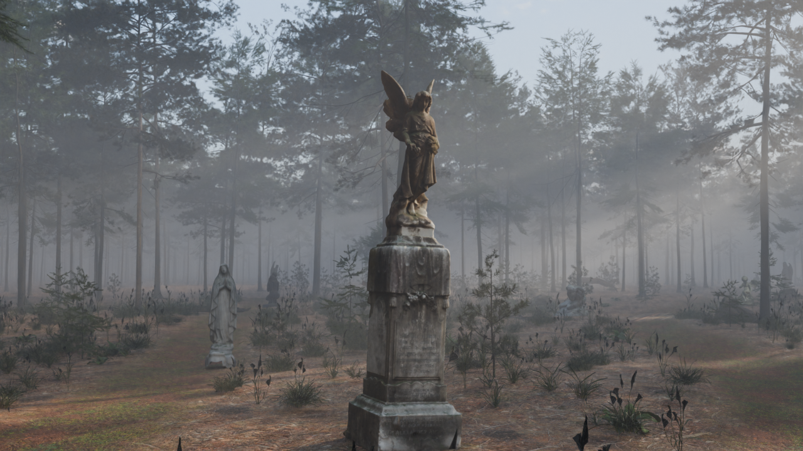
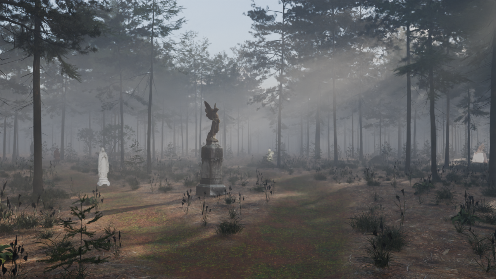
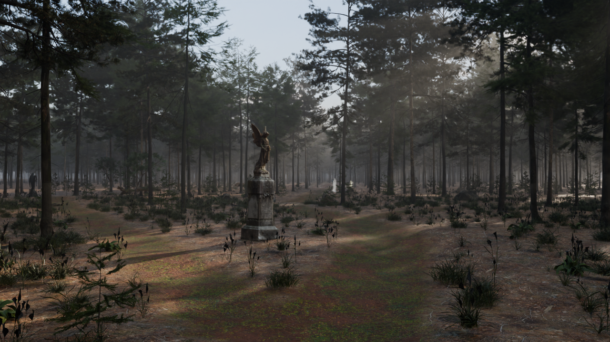

Gate 2 · Forest: silhouettes far, detail near (v07, for your approval)

The main forest view (your pick, formerly "view B"). Every statue is lit by the same sun and shade as everything else. From here they are only dim shapes in the low mist: the fork angel, the Madonna on the left, figures down the branches.

Walking up to the fork angel: within about 10 m the mist thins and she comes into full view, with moss, staining and inscription. The statues behind her are still only silhouettes.
What changed since test 04
- Distance does the hiding, not the material. A low ground mist (bounded to the first 7 m above the floor). Far statues fall to silhouettes; near ones are clear. This also maps directly to cheap distance fog on the website.
- Five statues were glowing. They came from Sketchfab as "unlit" materials that ignore the sun. They are now normal stone surfaces lit by the scene, weathered like the others.
- Statues are back on the branches, so several are faintly visible from the fork, as you asked.
Optimisation
- Faces: 32.0M → 10.7M. The six tree models are now 1.2M faces each, down from up to 7M. Statues are capped at 250k each.
- Textures: the seven 8K statue textures (about 1 billion pixels, packed inside the file) are now capped at 2K and kept as external files.
- Scene file: 1.8 GB → 578 MB. Renders: about 7 min → about 4–5 min per view. Peak RAM while rendering: 7.9 GB.
- Disk: deleted four superseded scene files (about 6 GB).
- The website itself will be far lighter still. It gets its own small tree models for the distance, compressed textures, and fog instead of volumetrics.
Before

v06: mist added, but two "unlit" statues glowing white.

Test 04: no mist, so statues were either hidden or fully visible.